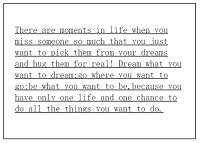

如何避免超长单词超出容器边界

继续阅读
我们都知道，英语单词的移行是有一定的规则的，不能随意地将一个词分到 两行。所以在没有人为的干预下，浏览器会将放不下的单词移到下一行显示。 那么，会不会出现即使移行也放不下的情况呢？
我们都知道，英语单词的移行是有一定的规则的，不能随意地将一个词分到 两行。所以在没有人为的干预下，浏览器会将放不下的单词移到下一行显示。 那么，会不会出现即使移行也放不下的情况呢？
今天才听说了CSS初始化这个东西。那么，什么是CSS初始化呢？又为什么要CSS初始化呢？ 我们都知道，浏览器有很多种，比如IE，Chrome，Firefox等等。各个浏览器的标签默认值不同，同一个网页的显示就会有差异。别小看这点差异，一点点差异也是能逼死强迫症的。那么为了兼容各个不同的浏览器，就应该将这些不同的默认值设定成相同的。这个过程就是CSS初始化